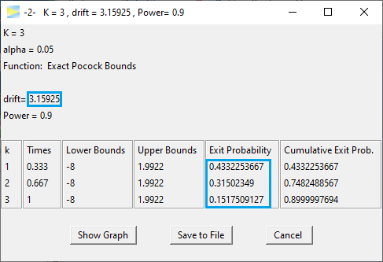

-2- Compute Drift given Power and Bounds
Source:vignettes/task-2-compute-drift.Rmd
task-2-compute-drift.RmdIf you haven’t seen the vignette -1- Compute Bounds, it is recommended to visit this one first.
The option -2- menu initially looks as follows.

O’Brien-Fleming 3-stage design
For a start lets set K=3 stages and
CALCULATE.

The design maintains the power of 80%. The second to last column
provides the Exit Probability for each stage. As is typical
for O’Brien-Fleming designs, the probability to abort the study at the
first interim look is very low (here 4%) even under H1.
Then on the second stage, it’s 42% and cumulative almost a 50% chance of
having the study aborted by then and finally in one third of the cases
the effect is detected at the last stage while in the remaining 20% of
cases H0 will be accepted and the effect stays undetected.
These probabilities are all valid if the true drift (i.e. true
standardized effect size) is 2.51.
Pocock 3-stage design
Next lets see the required drift if we use a Pocock design.
Apparently, to achieve a power of 80%, this design requires an effect of 2.71, which is 8% higher than that of the O’Brien-Fleming designs. Comparing the power of both designs for a specific drift, is discussed in -3- Compute Probabilities given Bounds and Drift.
With the Pocock design on the other hand you will be able to abort the study at the first interim look in about 33% of the cases, so if you are optimistic about your expected effect, the Pocock design might be the better choice as it will result in lower required samples on average and thereby a faster study conclusion.
To change the desired power, just edit the value in the input window.

If we re-CALCULATE, we get

As expected the required drift has increased to now 3.16, but
there is also something interesting to the resulting exit probabilities
as basically the 10% increase in power was “added” to the first interim
look, which now has a probability of 43% to succeed. Also the exit
probability at the final stage even has been decreased slightly.
First of all, this is good news, of course, because it means that it has become less likely that the full sample is required to come to a conclusion. Intuitively, this also makes sense, because a stronger effect indicated by the higher drift (on average) will be detected earlier than a weaker effect.
Manual bounds
In order to enable the computation of drift for arbitrary designs, you can enter bounds manually.
Hitting CALCULATE for the default bounds 1, 2, 3,
we get

This design maintains the specified power, if the drift was
3.355, but it does not maintain the 5% alpha level under H0
(drift = 0).
To see this, check out the next vignette -3- Compute Probabilities given Bounds and Drift